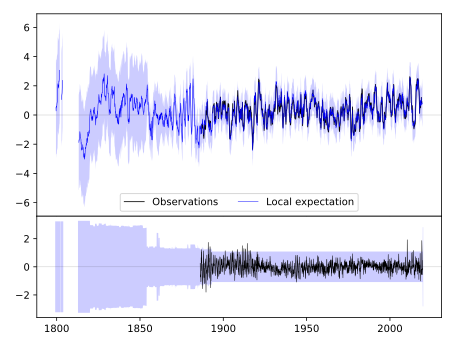
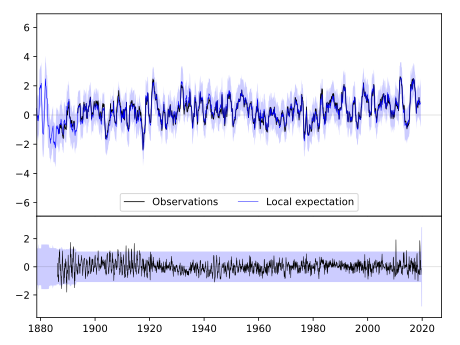
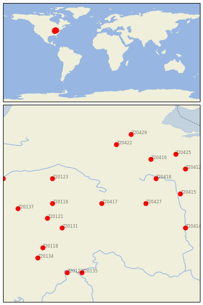

GREENVILLE WTP [USA]


| Neighbour | Name | Country | Distance | Lon/Lat | Years |
|---|
| 720417 | GREENVILLE WTP | USA | 0 | -84.7, 40.1 | 1886-2019 |
| 720427 | URBANA WWTP | USA | 76 | -83.8, 40.1 | 1854-2019 |
| 720116 | ANDERSON SEWAGE PLT | USA | 85 | -85.7, 40.1 | 1893-2019 |
| 720131 | RUSHVILLE | USA | 88 | -85.5, 39.6 | 1883-2019 |
| 720121 | GREENFIELD | USA | 99 | -85.8, 39.8 | 1893-2019 |
| 720123 | MARION 2 N | USA | 101 | -85.7, 40.6 | 1885-2019 |
| 720418 | KENTON | USA | 108 | -83.6, 40.6 | 1862-2019 |
| 720416 | FINDLAY WPCC | USA | 130 | -83.7, 41.0 | 1886-2019 |
| 720422 | DEFIANCE | USA | 135 | -84.4, 41.3 | 1887-2019 |
| 720415 | DELAWARE | USA | 137 | -83.1, 40.3 | 1893-2019 |
| 720118 | COLUMBUS | USA | 143 | -85.9, 39.2 | 1884-2019 |
| 720137 | WHITESTOWN | USA | 145 | -86.4, 40.0 | 1893-2019 |
| 720414 | CIRCLEVILLE | USA | 155 | -83.0, 39.6 | 1893-2019 |
| 720135 | VEVAY | USA | 159 | -85.1, 38.7 | 1864-2019 |
| 720412 | BUCYRUS | USA | 163 | -83.0, 40.8 | 1889-2019 |
| 720429 | WAUSEON WTP | USA | 163 | -84.1, 41.5 | 1870-2019 |
| 720134 | SEYMOUR 2 N | USA | 165 | -86.0, 39.0 | 1887-2019 |
| 720122 | MADISON SEWAGE PLT | USA | 166 | -85.4, 38.7 | 1854-2019 |
| 720425 | TIFFIN | USA | 168 | -83.2, 41.1 | 1873-2019 |
| 720119 | DELPHI 2 N | USA | 178 | -86.7, 40.6 | 1893-2019 |